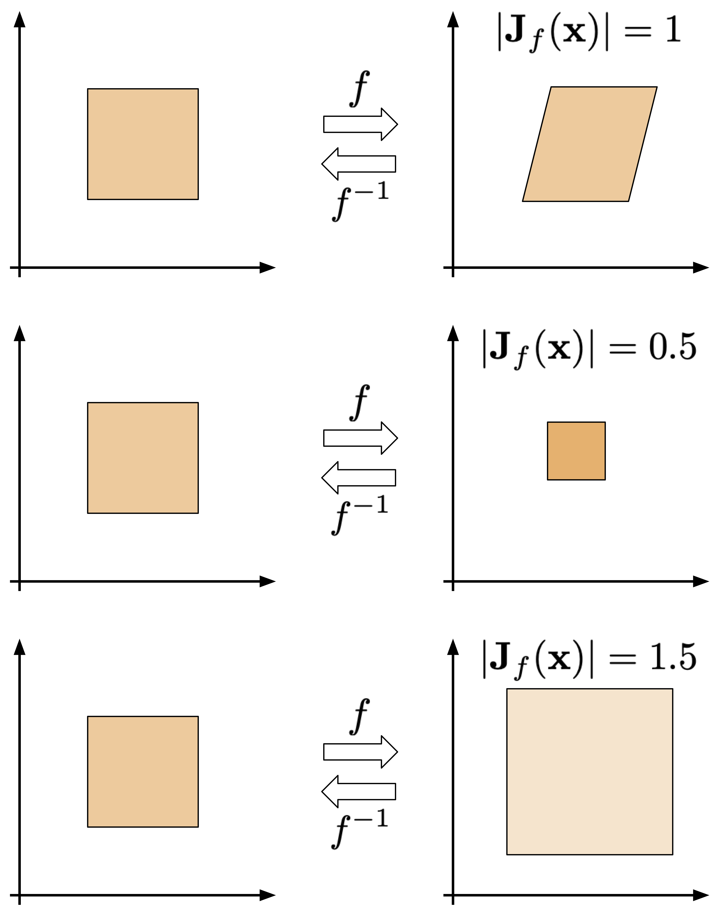
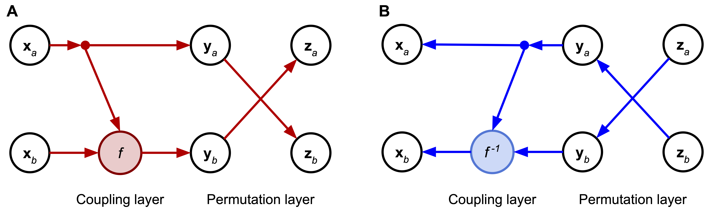

Flow-based Models¶
Introduction¶
So far, we have discussed a class of deep generative models that model the distribution $p(\mathbf{x})$ directly in an autoregressive manner. The main advantage of ARMs is that they can learn long-range statistics and, in a consequence, powerful density estimators. However, their drawback is that they are parameterized in an autoregressive manner, hence, sampling is rather a slow process. Moreover, they lack a latent representation, therefore, it's not obvious how to manipulate their internal data representation that makes it less appealing for tasks like lossy compression or metric learning.
In this write-up, we present a different approach to direct modeling of $p(\mathbf{x})$. Before we start our considerations, we will discuss a simple example.
Example Let us take a random variable $z \in \mathbb{R}$ with $\pi(z) = \mathcal{N}(z|0,1)$. Now, we consider a new random variable after applying some linear transformation to $z$, namely, $x = 0.75 z + 1$. Now the question is the following: What is the distribution of $x$, $p(x)$? We can guess the solution by using properties of Gaussians, or dig in our memory about the change of variables formula to calculate this distribution, that is:
$$ p(x) = \pi\left(z = f^{-1}(x)\right) \left|\frac{\partial f^{-1}(x)}{\partial x} \right| , $$where $f$ is an invertible function (a bijection). What does it mean? It means that the function maps one point to another, distinctive point, and we can always invert the function to obtain the original point.

In the figure above, we have a very simple example of a bijection. Notice that volumes of the domains do not need to be the same! Keep it in mind and think about it in the context of $\left|\frac{\partial f^{-1}(x)}{\partial x} \right|$.
Coming back to our example, we have:
$$ f(z) = 0.75 z + 1, $$and the inverse of $f$ is:
$$ f^{-1}(x) = \frac{x - 1}{0.75} . $$Then, the derivative of the change of volume is:
$$ \left| \frac{\partial f^{-1}(x)}{\partial x} \right| = \frac{4}{3} . $$Putting all together yields:
$$ p(x) = \pi\left( z = \frac{x - 1}{0.75} \right) \frac{4}{3} = \frac{1}{\sqrt{2 \pi\ 0.75^2} } \exp \left\{ - (x - 1)^2/0.75^2 \right\} $$We immediately realize that we end up with the Gaussian distribution again:
$$ p(x) = \mathcal{N}(x|1, 0.75). $$Moreover, we see that the part $\left|\frac{\partial f^{-1}(x)}{\partial x} \right|$ is responsible to normalize the distribution $\pi(z)$ after applying the transformation $f$. In other words, $\left|\frac{\partial f^{-1}(x)}{\partial x} \right|$ counteracts a possible change of volume caused by $f$.
First of all, this example indicates that we can calculate a new distribution of a continuous random variable by applying a known bijective transformation $f$ to a random variable with a known distribution, $z \sim p(z)$. The same holds for multiple variables $\mathbf{x}, \mathbf{z} \in \mathbb{R}^{D}$:
\begin{equation*} p(\mathbf{x}) = p\left(\mathbf{z}=f^{-1}(\mathbf{x})\right) \left|\frac{\partial f^{-1}(\mathbf{x})}{\partial \mathbf{x}} \right| , \label{eq:change_of_variables} \tag{1} \end{equation*}where:
$$ \left|\frac{\partial f^{-1}(\mathbf{x})}{\partial \mathbf{x}} \right| = \left| \det \mathbf{J}_{f^{-1}}(\mathbf{x})\right| $$is the Jacobian matrix $\mathbf{J}_{f^{-1}}$ that is defined as follows:
$$ \mathbf{J}_{f^{-1}} =\left[\begin{array}{ccc} \frac{\partial f_{1}^{-1}}{\partial x_{1}} & \cdots & \frac{\partial f_{1}^{-1}}{\partial x_{D}} \\ \vdots & \ddots & \vdots \\ \frac{\partial f_{D}^{-1}}{\partial x_{1}} & \cdots & \frac{\partial f_{D}^{-1}}{\partial x_{D}} \end{array}\right] . $$Moreover, we can also use the inverse function theorem that yields:
$$ \left| \mathbf{J}_{f^{-1}}(\mathbf{x}) \right| = \left| \mathbf{J}_{f}(\mathbf{x}) \right|^{-1} . $$Since $f$ is invertible, we can use the inverse function theorem to rewrite (\ref{eq:change_of_variables}) as follows:
$$ p(\mathbf{x}) = p\left(\mathbf{z}=f^{-1}(\mathbf{x})\right) \left| \mathbf{J}_{f}(\mathbf{x}) \right|^{-1} . %\label{eq:change_of_variables2} \tag{2} $$To get some insight into the role of the Jacobian-determinant, take a look at Figure 1. Here, there are three cases of invertible transformations that play around with a uniform distribution defined over a square.

Figure 1. Three examples of invertible transformations: (top) a volume-preserving bijection, (middle) a bijection that shrinks the original area, (bottom) a bijection that enlarges the original area.
In the case on top, the transformation turns a square into a rhombus without changing its volume. As a result, the Jacobian-determinant of this transformation is $1$. Such transformations are called volume-preserving. Notice that the resulting distribution is still uniform and since there is no change of volume, it is defined over the same volume as the original one, thus, the color is the same.
In the middle, the transformation shrinks the volume, therefore, the resulting uniform distribution is "denser" (a darker color in Figure 1). Additionally, the Jacobian-determinant is smaller than $1$.
In the last situation, the transformation enlarges the volume, hence, the uniform distribution is defined over a larger area (a lighter color in Figure 1). Since the volume is larger, the Jacobian-determinant is larger than $1$.
Notice that shifting operator is volume-preserving. To see that imagine adding an arbitrary value (e.g., $5$) to all points of the square. Does it change the volume? Not at all! Thus, the Jacobian-determinant equals $1$.
Change of variables for deep generative modeling¶
A natural question is whether we can utilize the idea of the change of variables to model a complex and high-dimensional distribution over images, audio or other data sources. Let us consider a hierarchical model, or, equivalently, a sequence of invertible transformations, $f_{k}: \mathbb{R}^{D} \rightarrow \mathbb{R}^{D}$. We start with a known distribution $\pi(\mathbf{z}_{0}) = \mathcal{N}(\mathbf{z}_{0} | 0, \mathbf{I})$. Then, we can sequentially apply the invertible transformations to obtain a flexible distribution (Rezende & Mohamed, 2015; Rippel & Adams, 2013):
$$ p(\mathbf{x})=\pi\left(\mathbf{z}_{0} = f^{-1}(\mathbf{x}) \right) \prod_{i=1}^{K}\left|\operatorname{det} \frac{\partial f_{i}\left(\mathbf{z}_{i-1}\right)}{\partial \mathbf{z}_{i-1}}\right|^{-1} $$or by using the notation of a Jacobian for the $i$-th transformation:
$$ p(\mathbf{x}) = \pi\left(\mathbf{z}_{0} = f^{-1}(\mathbf{x}) \right) \prod_{i=1}^{K} \left| \mathbf{J}_{f_{i}}(\mathbf{z}_{i-1}) \right|^{-1} . $$An example of transforming a unimodal base distribution like Gaussian into a multimodal distribution through invertible transformations is presented in Figure 2. In principle, we should be able to get almost arbitrary comples distribution and revert to a "simple" one.

Figure 2. An example of transforming a unimodal distribution (the latent space) to a multimodal distribution (the data space, e.g., the pixel space) through a series of invertible transformations $f_i$.
Let $\pi(\mathbf{z}_{0})$ be $\mathcal{N}(\mathbf{z}_0 | 0, \mathbf{I})$. Then, the logarithm of $p(\mathbf{x})$ is the following: \begin{equation*} \ln p(\mathbf{x}) = \ln \mathcal{N}\left(\mathbf{z}_{0} = f^{-1}(\mathbf{x}) | 0, \mathbf{I} \right) - \sum_{i=1}^{K} \ln \left| \mathbf{J}_{f_{i}}(\mathbf{z}_{i-1}) \right| . \label{eq:final_change_of_variables} \tag{2} \end{equation*}
Interestingly, we see that the first part, namely, $\ln \mathcal{N}\left(\mathbf{z}_{0} = f^{-1}(\mathbf{x}) | 0, \mathbf{I} \right)$ corresponds to the Mean Square Error loss function between $0$ and $f^{-1}(\mathbf{x})$. The second part, $\sum_{i=1}^{K} \ln \left| \mathbf{J}_{f_{i}}(\mathbf{z}_{i-1}) \right|$, as in our example, ensures that the distribution is properly normalized. However, since it penalizes the change of volume (take a look again at the example above!), we can think of it as a kind of a regularizer for the invertible transformations $\{f_i\}$.
Once we have laid down the foundations of the change of variables for expressing density functions, now we must face two questions:
- How to model the invertible transformations?
- What is the difficulty here?
The answer to the first question could be neural networks because they are flexible and easy-to-train. However, we cannot take any neural network because of two reasons. First, the transformation must be invertible, thus, we must pick an invertible neural network. Second, even if a neural network is invertible, we face a problem of calculating the second part of (\ref{eq:final_change_ofvariables}), i.e., $\sum{i=1}^{K} \ln \left| \mathbf{J}{f{i}}(\mathbf{z}_{i-1}) \right|$, that is non-trivial and computationally intractable for an arbitrary sequence of invertible transformations. As a result, we seek for such neural networks that are both invertible and the logarithm of a Jacobian-determinant is (relatively) easy to calculate. The resulting model that consists of invertible transformations (neural networks) with tractable Jacobian-determinants are referred to as normalizing flows or flow-based models.
There are various possible invertible neural networks with tractable Jacobian-determinants, e.g., Planar Normalizing Flows (Rezende & Mohamed, 2015), Sylvester Normalizing Flows (van den Berg et al., 2018), Residual Flows (Behrmann et al., 2019; Chen et al., 2019), Invertible DenseNets (Perugachi-Diaz et al., 2021). However, here we focus on a very important class of models: RealNVP, Real-valued Non-Volume Preserving flows (Dinh et al., 2016).
Coupling layers, permutation layers and dequantization¶
Coupling layers The main component of RealNVP is a coupling layer. The idea behind this transformation is the followng. Let us consider an input to the layer that is divided into two parts: $\mathbf{x} = [\mathbf{x}_{a}, \mathbf{x}_{b}]$. The division into two parts could be done by dividing the vector $\mathbf{x}$ into $\mathbf{x}_{1:d}$ and $\mathbf{x}_{d+1:D}$ or according to a more sophisticated manner, e.g., a checkerboard pattern (Dinh et al., 2016). Then, the transformation is defined as follows:
\begin{align*} \mathbf{y}_{a} &= \mathbf{x}_{a} \\ \mathbf{y}_{b} &= \exp \left(s\left(\mathbf{x}_{a}\right)\right) \odot \mathbf{x}_{b} + t\left(\mathbf{x}_{a}\right) , \end{align*}where $s(\cdot)$ and $t(\cdot)$ are arbitrary neural networks called scaling and transition, respectively.
This transformation is invertible by design, namely: \begin{align*} \mathbf{x}_{b} &= \left(\mathbf{y}_{b} - t(\mathbf{y}_{a})\right) \odot \exp \left(-s(\mathbf{y}_{a})\right) \\ \mathbf{x}_{a} &= \mathbf{y}_{a} . \end{align*}
Importantly, the logarithm of the Jacobian-determinant is easy-to-calculate, because:
$$ \mathbf{J}=\left[\begin{array}{cc} \mathbf{I}_{d\times d} & \mathbf{0}_{d \times(D-d)} \\ \frac{\partial \mathbf{y}_{b}}{\partial \mathbf{x}_{a}} & \operatorname{diag}\left(\exp \left(s\left(\mathbf{x}_{a}\right)\right)\right) \end{array}\right] $$that yields: $$ \det(\mathbf{J})=\prod_{j=1}^{D-d} \exp \left(s\left(\mathbf{x}_{a}\right)\right)_{j}=\exp \left(\sum_{j=1}^{D-d} s\left(\mathbf{x}_{a}\right)_{j}\right) . $$
Eventually, coupling layers seem to be flexible and powerful transformations with tractable Jacobian-determinants! However, we process only half of the input, therefore, we must think of an appropriate additional transformation to be combined with.
Permutation layer A simple yet effective transformation that could be combined with a coupling layer is a permutation layer. Since permutation is volume-preserving, i.e., its Jacobian-determinant is equal to $1$, we can apply it each time after the coupling layer. For instance, we can reverse the order of variables.
An example of an invertible block, i.e., a combination of a coupling layer with a permutation layer is schematically presented in Figure 3.

Figure 3. A combination of a coupling layer and a permutation layer that transforms $[\mathbf{x}_{a}, \mathbf{x}_{b}]$ to $[\mathbf{z}_{a}, \mathbf{z}_{b}]$. A A forward pass through the block. B An inverse pass through the block.
Dequantization As discussed so far, flow-based models assume that $\mathbf{x}$ is a vector of real-valued random variables. However, in practice, many objects are discrete. For instance, images are typically represented as integers taking values in $\{0, 1, ..., 255\}^{D}$. In (Theis et al., 2016), it has been outlined that adding a uniform noise, $\mathbf{u} \in [-0.5,0.5]^{D}$, to original data, $\mathbf{y} \in \{0, 1, ..., 255\}^{D}$, allows applying density estimation to $\mathbf{x} = \mathbf{y} + \mathbf{u}$. This procedure is known as uniform dequantization. Recently, there were different schema of dequantization proposed, you can read more on that in (Hoogeboom et al., 2021).
An example for two binary random variables and the uniform dequantization is depicted in Figure 4. After adding $\mathbf{u} \in [-0.5,0.5]^{2}$ to each discrete value, we obtain a continuous space and now probabilities originally associated with volumeless points are "spread" across small square regions.
Figure 4. A schematic representation of the uniform dequantization for two binary random variables: (left) the probability mass is assigned to points, (right) after the uniform dequantization, the probability mass is assigned to square areas. Colors correspond to probability values.
Flows in action!¶
Let us turn math into a code! We will first discuss the log-likelihood function (i.e., the learning objective) and how mathematical formulas correspond to the code. For the full code (with auxiliary functions etc.), please take a look at the additional file available here: [link].
First, it is extremely important to know what is our learning objective, i.e., the log-likelihood function. In the example, we use coupling layers as described earlier, together with permutation layers. Then, we can plug the logarithm of the Jacobian-determinant for the coupling layers (for the permulation layers it is equal to $1$, so $\ln (1) = 0$) in (2) that yields:
$$ \ln p(\mathbf{x}) = \ln \mathcal{N}\left(\mathbf{z}_{0} = f^{-1}(\mathbf{x}) | 0, \mathbf{I} \right) - \sum_{i=1}^{K} \left(\sum_{j=1}^{D-d} s_{k}\left(\mathbf{x}_{a}^{k}\right)_{j} \right), $$where $s_{k}$ is the scale network in the $k$-th coupling layer, and $\mathbf{x}_{a}^{k}$ denotes the input to the $k$-th coupling layer. Notice that $\exp$ in the log-Jacobian-determinant is cancelled by applying $\ln$.
Let us think again about the learning objective from the implementation perspective. First, we definitely need to obtain $\mathbf{z}$ by calculating $f^{-1}(\mathbf{x})$, and then we can calculate $\ln \mathcal{N}\left(\mathbf{z}_{0} = f^{-1}(\mathbf{x}) | 0, \mathbf{I} \right)$. That's actually easy, and we get:
$$ \ln \mathcal{N}\left(\mathbf{z}_{0} = f^{-1}(\mathbf{x}) | 0, \mathbf{I} \right) = -\text{const} - \frac{1}{2}\|f^{-1}(\mathbf{x})\|^{2} $$where $\text{const} = \frac{D}{2} \ln \left( 2\pi \right)$ is the normalizing constant of the standard Gaussian, and $\frac{1}{2}\|f^{-1}(\mathbf{x})\|^{2} = MSE(0, f^{-1}(\mathbf{x}))$.
Alright, now we should look into the second part of the objective, i.e., the log-Jacobian-determinants. As we can see, we have a sum over transformations, and for each coupling layer, we consider only the outputs of the scale nets. Hence, the only thing we must remember during implementing the coupling layers is to return not only output but also the outcome of the scale layer too.
Now, we have all components to implement our own RealNVP! Below, there is a code with a lot of comments that should help to understand every single line of it. The full code (with auxiliary functions) that you can play with is available here: [link].
class RealNVP(nn.Module):
def __init__(self, nets, nett, num_flows, prior, D=2, dequantization=True):
super(RealNVP, self).__init__()
# Well, it's always good to brag about yourself.
print('RealNVP by JT.')
# We need to dequantize discrete data. This attribute is used during training to dequantize integer data.
self.dequantization = dequantization
# An object of a prior (here: torch.distribution of multivariate normal distribution)
self.prior = prior
# A module list for translation networks
self.t = torch.nn.ModuleList([nett() for _ in range(num_flows)])
# A module list for scale networks
self.s = torch.nn.ModuleList([nets() for _ in range(num_flows)])
# The number of transformations, in our equations it is denoted by K.
self.num_flows = num_flows
# The dimensionality of the input. It is used for sampling.
self.D = D
# This is the coupling layer, the core of the RealNVP model.
def coupling(self, x, index, forward=True):
# x: input, either images (for the first transformation) or outputs from the previous transformation
# index: it determines the index of the transformation
# forward: whether it is a pass from x to y (forward=True), or from y to x (forward=False)
# We chunk the input into two parts: x_a, x_b
(xa, xb) = torch.chunk(x, 2, 1)
# We calculate s(xa), but without exp!
s = self.s[index](xa)
# We calculate t(xa)
t = self.t[index](xa)
# Calculate either the forward pass (x -> z) or the inverse pass (z -> x)
# Note that we use the exp here!
if forward:
#yb = f^{-1}(x)
yb = (xb - t) * torch.exp(-s)
else:
#xb = f(y)
yb = torch.exp(s) * xb + t
# We return the output y = [ya, yb], but also s for calculating the log-Jacobian-determinant
return torch.cat((xa, yb), 1), s
# An implementation of the permutation layer
def permute(self, x):
# Simply flip the order.
return x.flip(1)
def f(self, x):
# This is a function that calculates the full forward pass through the coupling+permutation layers.
# We initialize the log-Jacobian-det
log_det_J, z = x.new_zeros(x.shape[0]), x
# We iterate through all layers
for i in range(self.num_flows):
# First, do coupling layer,
z, s = self.coupling(z, i, forward=True)
# then permute.
z = self.permute(z)
# To calculate the log-Jacobian-determinant of the sequence of transformations we sum over all of them.
# As a result, we can simply accumulate individual log-Jacobian determinants.
log_det_J = log_det_J - s.sum(dim=1)
# We return both z and the log-Jacobian-determinant, because we need z to feed in to the logarightm of the Norma;
return z, log_det_J
def f_inv(self, z):
# The inverse path: from z to x.
# We appply all transformations in the reversed order.
x = z
for i in reversed(range(self.num_flows)):
x = self.permute(x)
x, _ = self.coupling(x, i, forward=False)
# Since we use this function for sampling, we don't need to return anything else than x.
return x
def forward(self, x, reduction='avg'):
# This function is essential for PyTorch.
# First, we calculate the forward part: from x to z, and also we need the log-Jacobian-determinant.
z, log_det_J = self.f(x)
# We can use either sum or average as the output.
# Either way, we calculate the learning objective: self.prior.log_prob(z) + log_det_J.
# NOTE: Mind the minus sign! We need it, because, by default, we consider the minimization problem,
# but normally we look for the maximum likelihood estimate. Therefore, we use:
# max F(x) <=> min -F(x)
if reduction == 'sum':
return -(self.prior.log_prob(z) + log_det_J).sum()
else:
return -(self.prior.log_prob(z) + log_det_J).mean()
def sample(self, batchSize):
# First, we sample from the prior, z ~ p(z) = Normal(z|0,1)
z = self.prior.sample((batchSize, self.D))
z = z[:, 0, :]
# Second, we go from z to x.
x = self.f_inv(z)
return x.view(-1, self.D)
# The number of flows
num_flows = 8
# Neural networks for a single transformation (a single flow).
nets = lambda: nn.Sequential(nn.Linear(D // 2, M), nn.LeakyReLU(),
nn.Linear(M, M), nn.LeakyReLU(),
nn.Linear(M, D // 2), nn.Tanh())
nett = lambda: nn.Sequential(nn.Linear(D // 2, M), nn.LeakyReLU(),
nn.Linear(M, M), nn.LeakyReLU(),
nn.Linear(M, D // 2))
# For the prior, we can use the built-in PyTorch distribution.
prior = torch.distributions.MultivariateNormal(torch.zeros(D), torch.eye(D))
# Init of the RealNVP. Please note that we need to dequantize the data (i.e., uniform dequantization).
model = RealNVP(nets, nett, num_flows, prior, D=D, dequantization=True)
Viola! Here we go, this is all we need to have. After running the code (take a look at: [link]) and training the RealNVP, we should obtain results similar to the following:
A  B
C
B
C
Figure 5. Examples of outcomes of the training: A Randomly selected real images. B Unconditional generations from the RealNVP. C The validation curve during training.
Is it all? Really?¶
Yes and no. Yes in the sense it is the minimalistic example of an implementation of the RealNVP. No, because there are many improvements:
Factoring out (Dinh et al., 2016): During the forward pass (from $\mathbf{x}$ to $\mathbf{z}$), we can split the variables and proceed with processing only a subset of them. This could help to parameterize the base distribution by using the outputs of intermediate layers.
Rezero trick (Bachlechner et al., 2020): Introducing additional parameters to the coupling layer, e.g., $\mathbf{y}_{b} = \exp\left(\alpha s(\mathbf{x}_{a})\right) \odot \mathbf{x}_{b} + \beta t(\mathbf{x}_{a})$ and $\alpha, \beta$ are initilized with $0$'s. This helps to ensure that the transformations act as identity maps in the beginning. It is shown in (Bachlechner et al., 2020) that it helps to learn better transformations by maintaining information about the input through all layers in the beginning of training.
Masking or Checkerboard pattern (Dinh et al., 2016): We can use a checkerboard pattern instead of dividing an input into two parts like $[\mathbf{x}_{1:D/2}, \mathbf{x}_{D/2+1:D}]$. This encourages learning local statistics better.
Squeezing (Dinh et al., 2016): We can also play around with "squeezing" some dimensions. For instance, an image consists of C channels, width W, and height H, could be turned into 4C channels, width W/2 and height H/2.
Learnable base distributions : instead of using a standard Gaussian base distribution, we can use another model for that, e.g., an autoregressive model.
Invertible 1x1 convolution (Kingma & Dhariwal, 2018): A fixed permutation could be replaced with a (learned) invertible 1x1 convolution as in the GLOW model of Kingma & Dhariwal.
Variational dequantization (Ho et al., 2019a): We can also pick a different dequantization scheme, e.g., variational dequantization. This allows to obtain much better scored. However, it's not for free because it leads to a lower bound to the log-likelihood function.
Moreover, there are many new fascinating research directions! I will name them here and point to papers where you can find more details:
Compression with flows (Ho et al., 2019b): Flow-based models are perfect candidates for compression since they allow to calculate the exact likelihood. Ho et al. proposed a scheme that allows to use flows in the bit-back-like compression scheme.
Conditional flows (Stypulkowski et al., 2020, Winkler et al., 2019; Wolf et al., 2021): Here, we present the unconditional RealNVP. However, we can used a flow-based model for conditional distributions. For instance, we can use the conditioning as an input to the scale network and the translation network.
Variational inference with flows (van den Berg et al., 2018; Kingma et al., 2016; Rezende & Mohamed, 2015; Hoogeboom et al., 2021; Tomczak & Welling, 2016; Tomczak & Welling, 2017): Conditional flow-based models could be used to form a flexible family of variational posteriors. The, the lower-bound to the log-likelihood function should be tighter.
Integer discrete flows (Hoogeboom et al., 2019; van den Berg et al., 2020; Tomczak, 2020): Another interesting direction is a version of the RealNVP for integer-valued data. We will explain it in another blog post.
Flows on manifolds (Brehmer & Cranmer, 2020): Typically, flow-based models are considered in the Euclidean space. However, they could be considered in non-Euclidean spaces, resulting in new properties of (partially) invertible transformations.
Many other interesting information on flow-based models could be found in a fantastic review by (Papamakarios et al., 2019).
References¶
(Bachlechner et al., 2020) Bachlechner, T., Majumder, B. P., Mao, H. H., Cottrell, G. W., & McAuley, J. (2020). Rezero is all you need: Fast convergence at large depth. arXiv preprint arXiv:2003.04887.
(Behrmann et al., 2019) Behrmann, J., Grathwohl, W., Chen, R. T., Duvenaud, D., & Jacobsen, J. H. (2019, May). Invertible residual networks. In International Conference on Machine Learning (pp. 573-582). PMLR.
(van den Berg et al., 2018) van den Berg, Rianne, Leonard Hasenclever, Jakub M. Tomczak, and Max Welling. "Sylvester normalizing flows for variational inference." In 34th Conference on Uncertainty in Artificial Intelligence 2018, UAI 2018, pp. 393-402. Association For Uncertainty in Artificial Intelligence (AUAI), 2018.
(van den Berg et al., 2020) van den Berg, R., Gritsenko, A. A., Dehghani, M., Sønderby, C. K., & Salimans, T. (2020). IDF++: Analyzing and Improving Integer Discrete Flows for Lossless Compression. arXiv preprint arXiv:2006.12459.
(Brehmer & Cranmer, 2020) Brehmer, J., & Cranmer, K. (2020). Flows for simultaneous manifold learning and density estimation. Advances in Neural Information Processing Systems, 33.
(Chen et al., 2019) Chen, R. T., Behrmann, J., Duvenaud, D. K., & Jacobsen, J. H. (2019). Residual flows for invertible generative modeling. In Advances in Neural Information Processing Systems (pp. 9916-9926).
(Dinh et al., 2016) Dinh, Laurent, Jascha Sohl-Dickstein, and Samy Bengio. "Density estimation using real nvp." arXiv preprint arXiv:1605.08803 (2016).
(Ho et al., 2019a) Ho, J., Chen, X., Srinivas, A., Duan, Y., & Abbeel, P. (2019). Flow++: Improving flow-based generative models with variational dequantization and architecture design. In International Conference on Machine Learning (pp. 2722-2730). PMLR.
(Ho et al., 2019b) Ho, J., Lohn, E., & Abbeel, P. (2019). Compression with flows via local bits-back coding. arXiv preprint arXiv:1905.08500.
(Hoogeboom et al., 2019) Hoogeboom, E., Peters, J. W., Berg, R. V. D., & Welling, M. (2019). Integer discrete flows and lossless compression. arXiv preprint arXiv:1905.07376.
(Hoogeboom et al., 2021) Hoogeboom, E., Cohen, T. S., & Tomczak, J. M. (2020). Learning Discrete Distributions by Dequantization. AABI 2021
(Kingma et al., 2016) Kingma, D. P., Salimans, T., Jozefowicz, R., Chen, X., Sutskever, I., & Welling, M. (2016). Improved variational inference with inverse autoregressive flow. Advances in neural information processing systems, 29, 4743-4751.
(Kingma & Dhariwal, 2018) Kingma, D. P., & Dhariwal, P. (2018). GLOW: generative flow with invertible 1Ã 1 convolutions. In Proceedings of the 32nd International Conference on Neural Information Processing Systems (pp. 10236-10245).
(Papamakarios et al., 2019) Papamakarios, G., Nalisnick, E., Rezende, D. J., Mohamed, S., & Lakshminarayanan, B. (2019). Normalizing flows for probabilistic modeling and inference. arXiv preprint arXiv:1912.02762.
(Perugachi-Diaz et al., 2021) Perugachi-Diaz, Y., Tomczak, J. M., & Bhulai, S. (2021). Invertible DenseNets. AABI 2021
(Rezende & Mohamed, 2015) Rezende, D., & Mohamed, S. (2015). Variational Inference with Normalizing Flows. In International Conference on Machine Learning (pp. 1530-1538).
(Rippel & Adams, 2013) Rippel, O., & Adams, R. P. (2013). High-dimensional probability estimation with deep density models. arXiv
(Stypulkowski et al., 2020) Stypulkowski, M., Kania, K., Zamorski, M., Zieba, M., Trzcinski, T., & Chorowski, J. (2020). Representing Point Clouds with Generative Conditional Invertible Flow Networks. arXiv preprint arXiv:2010.11087.
(Theis et al., 2016) Theis, L., Oord, A. V. D., & Bethge, M. (2016). A note on the evaluation of generative models. ICLR 2016
(Tomczak & Welling, 2016) Tomczak, J. M., & Welling, M. (2016). Improving variational auto-encoders using householder flow. arXiv preprint arXiv:1611.09630.
(Tomczak & Welling, 2017) Tomczak, J. M., & Welling, M. (2017). Improving variational auto-encoders using convex combination linear inverse autoregressive flow. arXiv preprint arXiv:1706.02326.
(Tomczak, 2020) Tomczak, J. M. (2020). General Invertible Transformations for Flow-based Generative Modeling. arXiv preprint arXiv:2011.15056.
(Winkler et al., 2019) Winkler, C., Worrall, D., Hoogeboom, E., & Welling, M. (2019). Learning likelihoods with conditional normalizing flows. arXiv preprint arXiv:1912.00042.
(Wolf et al., 2021) Wolf, V., Lugmayr, A., Danelljan, M., Van Gool, L., & Timofte, R. (2021). DeFlow: Learning Complex Image Degradations from Unpaired Data with Conditional Flows. arXiv preprint arXiv:2101.05796.